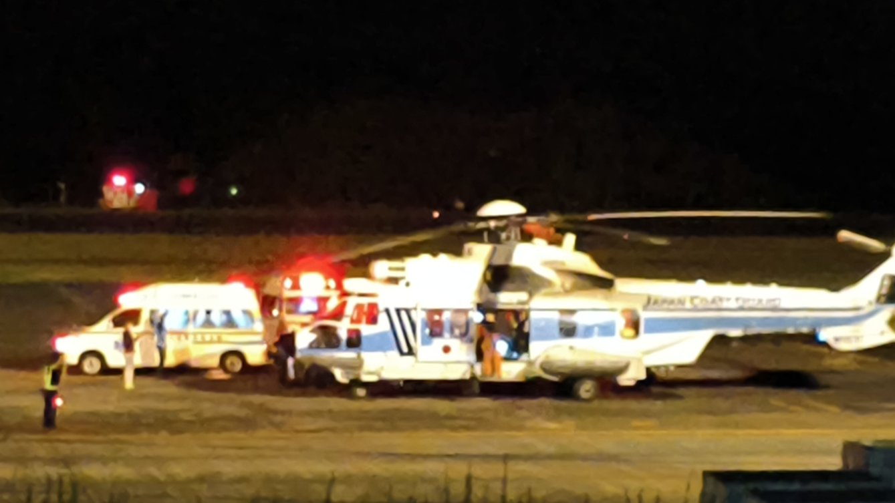
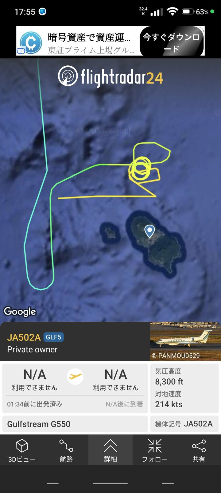
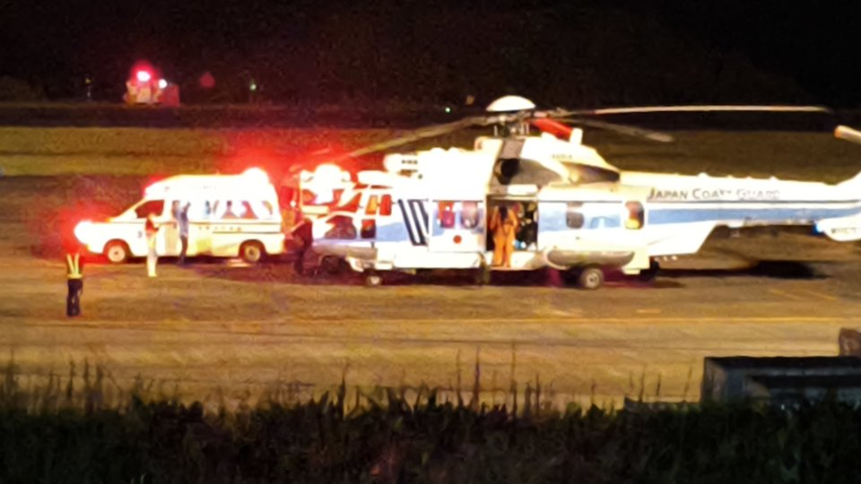
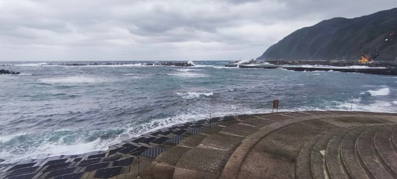
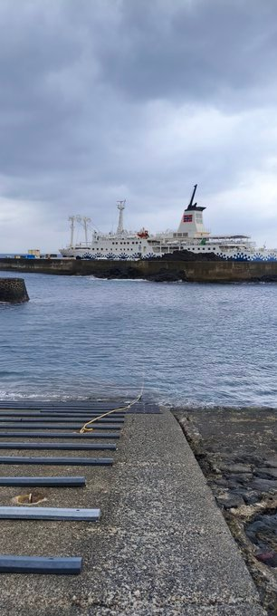
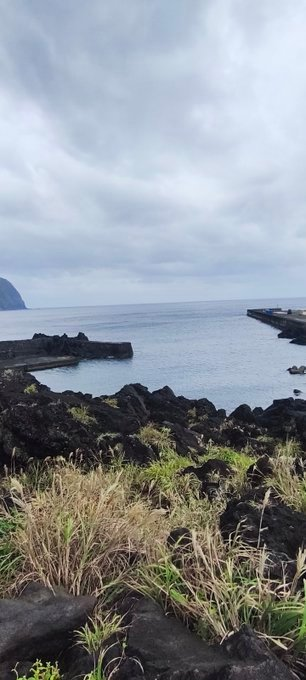
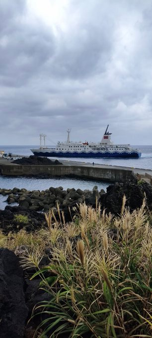
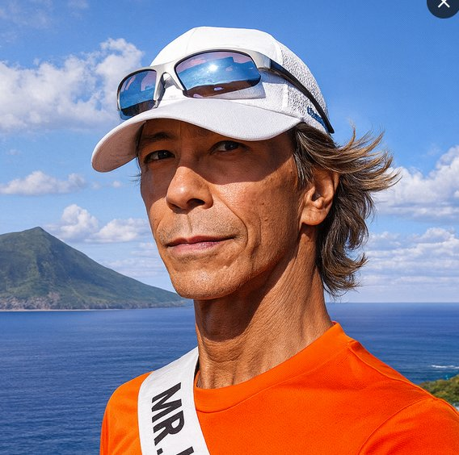

令和8年 八丈島ボートダイビング ダイバー8名 行方不明事故
八丈島 ボートダイビング 行方不明事故
2026年10月3日 午後12時半頃
島内ダイビングショップの八丈小島ボートダイビングツアー中
船長から ダイバー8名が浮いてこないと118番通報が有り
海上保安庁が出動し捜索の結果 ヘリコプター「おおわし」により
行方不明者8名全員を救助しました
八丈島空港に降り立ち待機していた救急車2台に
それぞれ男女４めいずつ分譲して町立八丈病院へと運ばれました
1名はストレッチャーに乗っていましたが 救急隊員が呼びかけていました。
残り7名は自力で毛布を羽織ったまま立って歩き病院内へと入っていきました。
女性の中には笑顔も見えました。
全員ドライスーツやウエットスーツを着用したままです。

情報が入ったのは遅く警察も同様かなり遅めの情報だった。
一報を受け 東西両方の港へと直行しましたが
何も情報が得られず
ふと フライトレコーダーを見ると
保安庁のジエット機が捜索を終えた模様
TBS高木記者からも連絡が入り
空港へと向かい 写真と動画を収めました。

その際の スクリーンショットです
空以降に到着した時はダイバーは既に 救急車に乗り込んでいた模様
車が動き始めたので 町立病院へ先回りして暫し待つことにした。

写真は個人情報なので撮影はしませんでしたが
ショップとインストラクターを特定しました
船も情報が入り船名も分かりましたが 公開はしません。
台風27号接近の状況で 強い北東の風
が10メートル以上吹き 会場は大時化。
西側は凪ぎていましたが
東側の底土はかなりの時化

明日の ウミガメスイムレースも開催が危ぶまれている最中でした。

何かと話題の東海汽船さるびあ丸は 八重根港へ着岸しました。
とても 静かな海でした。

旧八重根港で十分楽しいダイビングが出来るのに
あえて八丈小島へ船を出す理由が良くわかりません
安全を優先し
リスクマネジメントを重要視しないと
今回のような重大な事故に逢います。
万が一 漂流したら
ウエイトは捨てて タンクも残圧のないものは捨てる。
BCジャケットに空気を入れ浮力を確保し
上空のヘリや航空機から発見されやすくするため
光るものやライトは必須
Cameraは捨ててもストロボが生きていれば捨てず
発光するものは大切に使う。
マーカーブイは個人で持ち
仲間とはぐれても 目につくよう備えておくこと。
飲水は 個人の判断だが 小さいペットボトルに水を入れ
BCのポケットに忍ばせておくことぐらいは出来るだろう
長時間の漂流と慣れば 喉が乾くことは必至。
海水を飲んではいけません。

慌てず 動かず 体力と体温を温存し
小水もなるべく我慢して
特にドライスーツの場合 中でしたら冷めて 冷えます。
船が見えても 船からは漂流者は見えません。
何かしらの合図を送る手段を考えましょう。
ミラー ホイッスルなど。
日が暮れたら もう闇夜です
月明かりも無ければ真っ暗です。
ライトは無駄に使用せず 航空機の到着をひたすらまちましょう。
以上 今回は全員無事に救助されたのは奇跡です。
うねりと風の中の時化で 水面を漂い 流されたら 海水を飲んだりしますので
シュノーケルは必ず着用してダイビングしてください
最近見かける GoProでの 映え写真撮影のために
シュノーケルを持たずに海へ入るバカどもが居ます。
ウエットスーツさえ着用しない学生も多い中
今回の事は大いに教訓となったことでしょう。
日頃から私が行っている意味が
わかってくれたら幸いです。
八丈島シュノーケリングセンター代表 服部克彦
1991年 NAUI指導員取得 #12364
現在は NAUI指導員は引退しております。

※ この記事はアメブロからの移行記事です（原文はこちら）